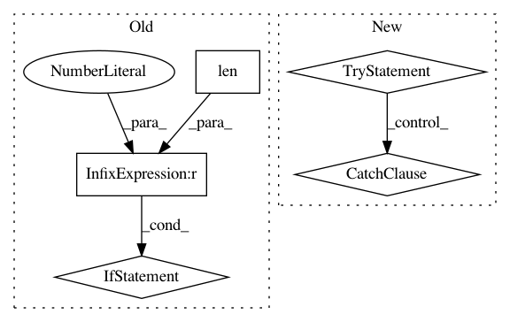

96c2d3d2b50a25821336ed2b56daa187f293ef09,python/ray/tune/sample.py,Function,__init__,#Function#Any#,349
Before Change
default_sampler_cls = _CallSampler
def __init__(self, func: Callable):
if len(signature(func).parameters) > 1:
raise ValueError(
"The function passed to a `Function` parameter must accept "
"either 0 or 1 parameters.")
self.func = func
def is_function(self):
return True
After Change
pass_spec = False
if not pass_spec:
try:
sig.bind()
except TypeError as exc:
raise ValueError(
"The function passed to a `Function` parameter must be "
"callable with either 0 or 1 parameters.") from exc
self.pass_spec = pass_spec
self.func = func
def is_function(self):
In pattern: SUPERPATTERN
Frequency: 3
Non-data size: 5
Instances
Project Name: ray-project/ray
Commit Name: 96c2d3d2b50a25821336ed2b56daa187f293ef09
Time: 2021-01-05
Author: krfricke@users.noreply.github.com
File Name: python/ray/tune/sample.py
Class Name: Function
Method Name: __init__
Project Name: asyml/texar
Commit Name: af461df627ef660d1a71b6981dedb4e4b504ba9a
Time: 2017-09-25
Author: junxianh2@gmail.com
File Name: txtgen/modules/connectors/connectors.py
Class Name: StochasticConnector
Method Name: _build
Project Name: ray-project/ray
Commit Name: 85197deece837a1f4ffdbbffb72af6028a9b6e32
Time: 2020-11-11
Author: ameerh@berkeley.edu
File Name: python/ray/autoscaler/_private/resource_demand_scheduler.py
Class Name: ResourceDemandScheduler
Method Name: _infer_legacy_node_resources_if_needed